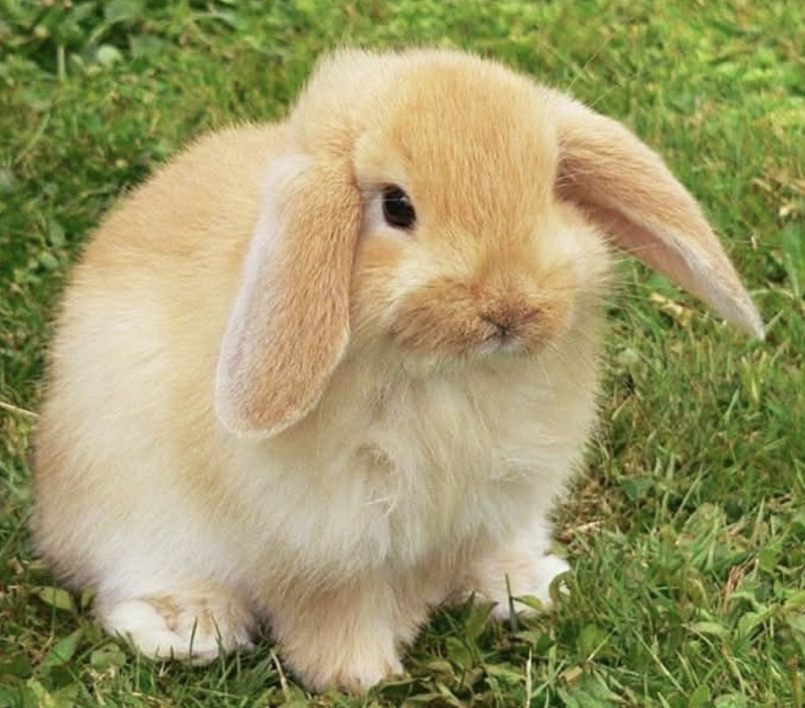
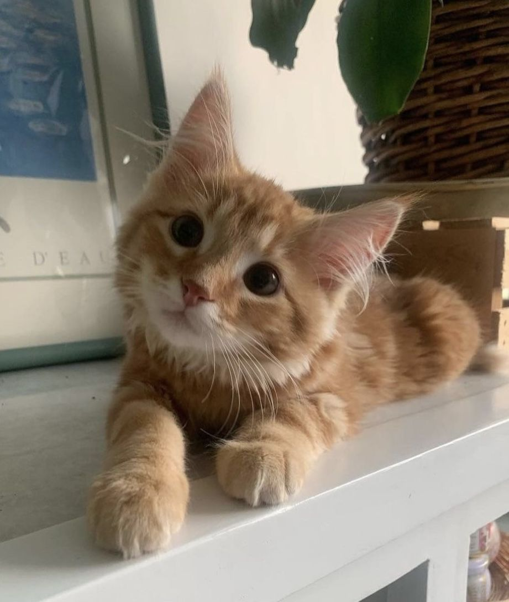
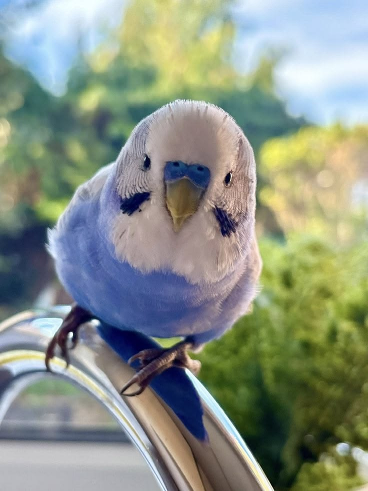

Animales adorables que me gustaría tener como mascota

Son pequeños mamíferos lagomorfos conocidos por su cuerpo compacto, pelaje suave, largas orejas y patas traseras fuertes adaptadas para saltar
Más información
Son pequeños mamíferos carnívoros de la familia de los félidos. Se destacan por ser animales domésticos ágiles y silenciosos.
Más información
Son aves psitaciformes de tamaño pequeño a mediano conocidos por su pico fuerte y curvado, su plumaje de colores vivos, y su gran inteligencia.
Más informaciónChih-Ling Kang · Clave 12